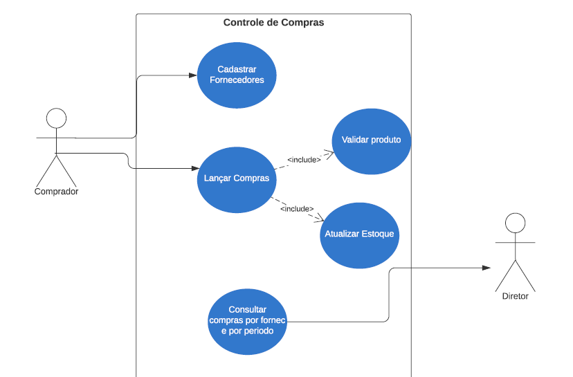

O Diagrama de Caso de Uso é um diagrama comportamental que representa as interações entre o usuário e o sistema e é utilizado para modelar a estrutura do software.
Analisando o diagrama da figura abaixo podemos afirmar:

Opções da pergunta 1:
Os diagramas de classes são uma parte crucial da modelagem orientada a objetos, usados no processo de desenvolvimento de software para representar a estrutura estática de um sistema. Eles mostram as classes e interfaces, assim como as associações, heranças, e multiplicidades entre elas. Usar um diagrama de classes pode ajudar a esclarecer as responsabilidades das classes e como elas interagem umas com as outras.
Em um diagrama de classes, qual dos seguintes aspectos é melhor representado para explicar a relação entre diferentes classes?
Opções da pergunta 2:
Os diagramas de classes são uma parte crucial da modelagem orientada a objetos, usados no processo de desenvolvimento de software para representar a estrutura estática de um sistema. Eles mostram as classes e interfaces, assim como as associações, heranças, e multiplicidades entre elas. Usar um diagrama de classes pode ajudar a esclarecer as responsabilidades das classes e como elas interagem umas com as outras.
Em um diagrama de classes, qual dos seguintes aspectos é melhor representado para explicar a relação entre diferentes classes?
Opções da pergunta 3:
O Diagrama de Caso de Uso é uma ferramenta importante para a modelagem de sistemas. Indique se as seguintes afirmações são verdadeiras (V) ou falsas (F):
( ) O Diagrama de Caso de Uso é usado para descrever os requisitos do sistema.
( ) O Diagrama de Caso de Uso representa a arquitetura do sistema.
( ) Os atores no Diagrama de Caso de Uso representam apenas usuários humanos.
( ) Um caso de uso pode ser utilizado por apenas um ator.
( ) O Diagrama de Caso de Uso é uma ferramenta útil para comunicação entre os stakeholders do projeto.
Opções da pergunta 4:
Utilizar modelagem baseada em Casos de Uso permite a fácil compreensão pelos usuários, pois permite discussão entre as partes interessadas e um meio para acompanhar o progresso dos trabalhos.
Analise as afirmações a seguir, classificando-as como (V) verdadeiras ou (F) falsas:
( ) A modelagem baseada em Casos de Uso é uma técnica que permite descrever as interações entre os atores e o sistema de forma clara e compreensível.
( ) Um caso de uso bem escrito foca na solução informatizada, descrevendo detalhadamente a implementação técnica do sistema.
( ) Os casos de uso são úteis apenas na fase de desenvolvimento de software e não desempenham nenhum papel nas etapas anteriores do ciclo de vida.
( ) Os Diagramas de Casos de Uso são uma parte fundamental da modelagem baseada em Casos de Uso e fornecem uma visão gráfica das interações entre atores e casos de uso.
( ) A especificação textual dos Casos de Uso não é necessária, uma vez que os Diagramas de Casos de Uso já fornecem informações suficientes para o desenvolvimento do sistema.
Opções da pergunta 5: